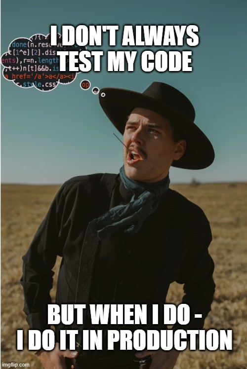
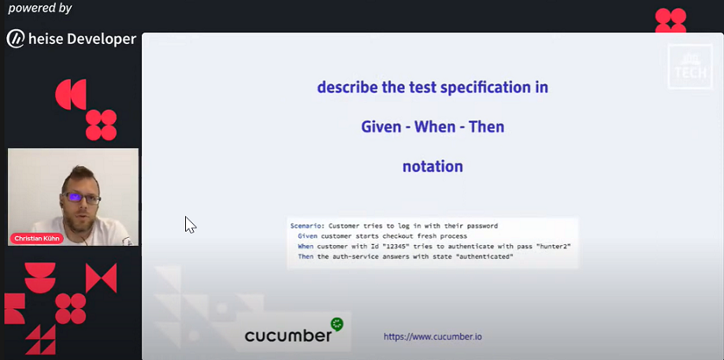
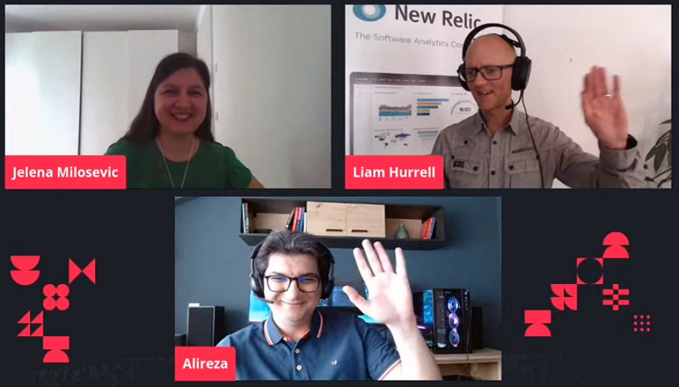

3 lessons from the world’s largest software development conference
Last week, I had the privilege of attending the WeAreDevelopers World Congress '21, a conference where I watched wide-eyed when speakers such as Tim Berners-Lee and Jeremy Keith doled out a lifetime's worth of inspiration.
Yet, as an RPA developer, I was constantly thinking about what I can directly apply to my existing skill set from this conference. Here are three such takeaways.
- Good design supports automated testing
- Launches an application
- Logs into it
- Navigates to a particular screen
- A user-friendly method to define acceptance tests
- The Given part describes the initial state that is required for your test to run. These are the preconditions to execute the system.
- The When part describes the behaviour of your process.
- The Then part describes the expected change.
- DevOps is the key to scaling RPA
- Access to process logs
- Logging detail and availability
- Orchestrator access rights
- Timely deployment of releases into production
- What is at fault - code or the infrastructure?
- The development team must build empathy for whatever happens to their code after they ship it to production. They must be curious and learn about a day-in-the-life of the people who run their code.
- Operations must make it easy for development to understand the impact of their code / process design changes. This means greater transparency into the production environment (through read-only access).
I have often seen RPA teams not spending time on writing automated tests. They claim that it is too hard, and that it is a waste of their time. Too often, the only testing that an RPA process goes through before production is ad-hoc manual tests during development.

But here’s the bitter truth. If you find it hard to write tests, it is mostly because your code is crappy. It likely has too many tightly coupled dependencies.
Let me illustrate what I mean with an example. Suppose you have one workflow which
It is difficult to write tests for this workflow because it produces 3 distinct outcomes that are dependent on each other – launch, log-in and navigation. To make your code more testable, you need to have separate workflows for each of those actions.
A hat-tip to Golo Roden for this great reminder in his session: How not to test.
Your process needs to go into User Acceptance Testing (UAT) and you need a set of tests from the business users. You send them your UAT Excel template and ask them to populate it with test cases. When you receive it, you simply cannot comprehend what needs to be tested.
On a different process that another developer in your team has automated, you receive a set of integration tests to test the process. Even though you have her test cases, you are unable to comprehend how they are structured and how they need to be run.
How often have you faced these situations? Fortunately, there is a way to break this vicious cycle of incomprehensible test definitions: Given – When – Then.
Does this sound familiar? UiPath’s Test Automation suite already uses this structure. The advantage of using the Given – When – Then schema is that you can define your tests in a language that everybody understands.
Here’s a simple example, to test a logout functionality:
Given:
The bot user is logged into the system.
When:
The bot clicks on the logout button.
Then:
The bot user receives a message that he / she is logged out.
Here’s another more detailed example:
Given:
The bot user is logged into the Vehicle Records system
When:
The bot queries Vehicle number ‘123456’
Then:
The bot receives a message that the vehicle wasn’t found
AND
The bot sends an email to the business user with the error message ‘123456 – Vehicle Not
Found’ to the process owner
You could use this format for specifying all acceptance tests – integration tests within the development team or UATs, where the end-user is involved. Read more about Given-When-Then here: https://martinfowler.com/bliki/GivenWhenThen.html.
A hat tip to Christian Kühn for inspiring this idea from his session Continuous testing - run automated tests for every change!

How many arguments have you gotten into with your infrastructure engineer on the following topics:
These arguments stem from a lack of mutual understanding between the development and the operations teams. Developers often feel like the ops folks are always putting hurdles in their way of changing and fixing code, while the ops folks often accuse the developers of shipping poor quality code that keeps breaking the production environment. In this heated battle, the customer is caught in the cross-fire.
The larger your RPA practice, the more frequent (and bitter) these arguments become. An elegant solution from the software development world to these problems is to institute DevOps practices.
DevOps is a term you often hear thrown about. Its primary aim is simple - frictionless cross-team collaboration between the folks who create code (business analysts, developers) and those who run it in production environments (process monitoring, infrastructure engineers). I believe that adopting a DevOps mindset is the key to successfully scaling an RPA program.
In his talk Journey from Developer to DevOps, Alireza Chegini outlined two principles for successful DevOps collaboration:

Every experienced RPA developer realizes that the boundaries between RPA and software development are a lot thinner than they are made out to be. Besides, software development has solved several problems that we currently face in enterprise RPA, through clean coding standards, rigorous code reviews, continuous integration, automated testing etc.
After an exciting week full of learning, I am eager to integrate what I have learnt at this year’s WeAreDevelopers conference into my day-to-day work, even as I look forward to next year’s event.